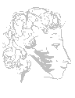

|  А.Пушкин "Поэт и толпа" 1828г. Procul este, profanil Этюды Попову Г.Х. Н.Варлей В.Новодворской В.Высоцкому А.Минкину Б.Окуджаве |
Поэт по лире вдохновенной Рукой рассеянной бряцал. Он пел - а хладнокровный и надменный Кругом народ непосвященный Ему бессмысленно внимал И толковала чернь тупая: "Зачем так звучно он поет? Напрасно ухо поражая, К какой он цели нас ведет? О чем бренчит? чему нас учит? Зачем сердца волнует, мучит, Как своенравный чародей? Как ветер, песнь его свободна, Зато как ветер и бесплодна: Какая польза нам от ней? Поэт Молчи, бессмысленный народ, Поденщик, раб нужды, забот! Несносен мне твой ропот дерзкий, Ты червь земли, не сын небес; Тебе бы пользы все - на вес Кумир ты ценишь Бельведерский. Ты пользы, пользы в нем не зришь. Но мрамор сей ведь бог!...так что же? Печной горшок тебе дороже: Ты пищу в нем себе варишь. Чернь Нет, если ты небес избранник, Свой дар, божественный посланник, Во благо нам употребляй: Сердца собратьев исправляй |
Мы малодушны, мы коварны, Бесстыдны, злы, неблагодарны; Мы сердцем хладные скопцы, Клеветники,
рабы, глупцы; Гнездятся клубом в нас пороки. Ты можешь ближнего любя, Давать нам смелые уроки, А
мы послушаем тебя. Поэт Подите прочь - какое дело Поэту мирному до вас! В разврате каменейте смело, Не оживит вас лиры глас! Душе противны вы, как гробы. Для вашей глупости и злобы Имели вы до сей поры Бичи, темницы, топоры; - Довольно с вас, рабов безумных! Во градах ваших с улиц шумных Сметают сор, - полезный труд! - Но, позабыв свое служенье, Алтарь и жертвоприношенье, Жрецы ль у вас метлу берут? Не для житейского волненья, Не для корысти, не для битв, Мы рождены для вдохновенья, Для звуков сладких и молитв. |